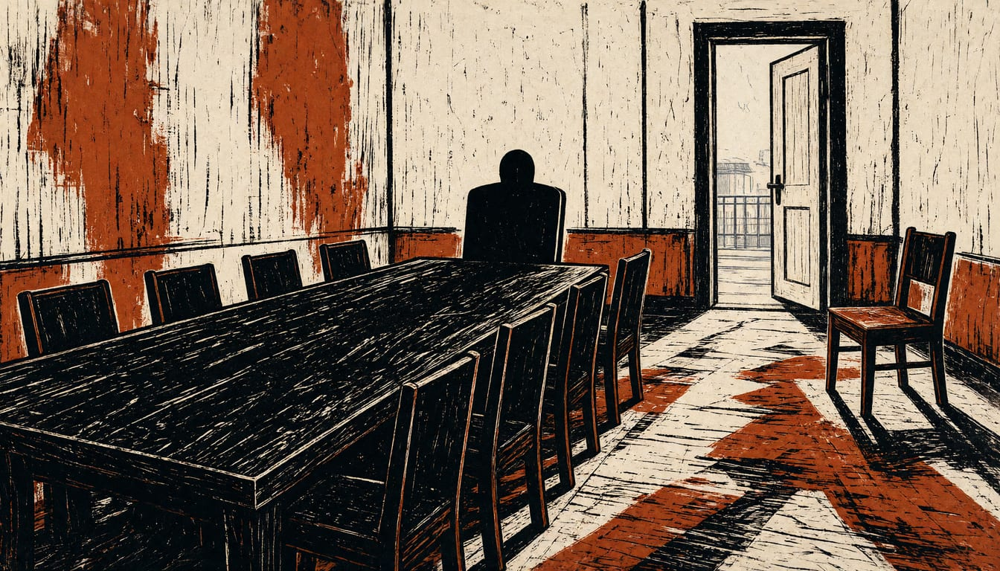

Europe gets a seat at the next Ukraine talks, but not the deal
Trump's envoy Kushner announced the move on Thursday, and the Kremlin at once played it down. EU foreign policy chief Kallas said the US cannot negotiate lifting sanctions on Europe's behalf.

Ukraine and Russia have agreed to bring European countries into the next round of peace talks. Trump's envoy Jared Kushner said this late on Thursday; the Kremlin quickly played down Putin's agreement to do so. EU foreign policy chief Kaja Kallas said the US can't negotiate on Europe's behalf regarding lifting Russia sanctions.
Kallas said she had seen no goodwill from Moscow. She insisted a ceasefire must come before any talks on a peace deal or Europe's wider security.
Two days of talks between Russia, Ukraine and the US ended with no breakthrough and no European officials in the room. Witkoff and Kushner then left the Kremlin on 13 November to fly on to Dublin, where Zelenskyy joined a European summit. There, 43 countries signed a declaration that European security must be decided by Europeans. The same declaration underlined the need for robust and credible security guarantees for Ukraine.
Italy's Giorgia Meloni wrote to Council President António Costa on Thursday. Europe risked becoming irrelevant otherwise, she warned. Luxembourg's Luc Frieden backed Costa himself as the natural choice for EU heads of government. Emmanuel Macron argued the other way: Europe must first agree on its own vision for peace and security before picking a voice. Without Europeans, Macron said, there is no support for Ukraine.
Zelenskyy said the agenda will cover de-escalation and possible ceasefires. Putin, though, refused to soften his territorial demands. He told Washington to work with its European allies and work out whether they want peace or war in Ukraine.